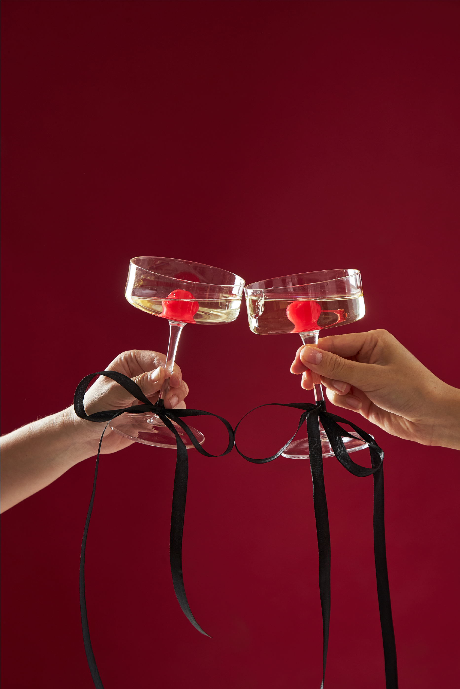
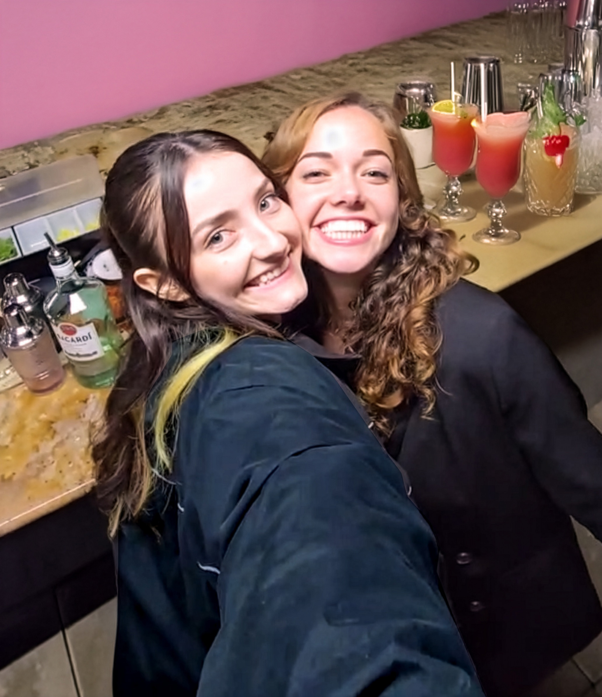

Mobile bartending and event photography for elevated celebrations. Two staff on every event for safety, service, and style.
Book a consultation
Make It A Double is a woman-owned mobile bartending and event creative studio built around safety, style, and unforgettable celebrations.
We created this company after seeing too many bartenders working alone in high-pressure, unpredictable environments. Our two-staff model sets a new standard for event safety, ensuring smoother service, stronger support, and a better experience for both staff and guests.
We offer mobile bartending services and event photography as two distinct offerings, allowing clients to book exactly what they need. Whether you’re looking for elevated cocktail service, professional event photography, or both, our team brings intention, professionalism, and care to every detail.
From intimate gatherings to large-scale events, we help you relax, celebrate, and trust that your event is in experienced, safety-first hands.
